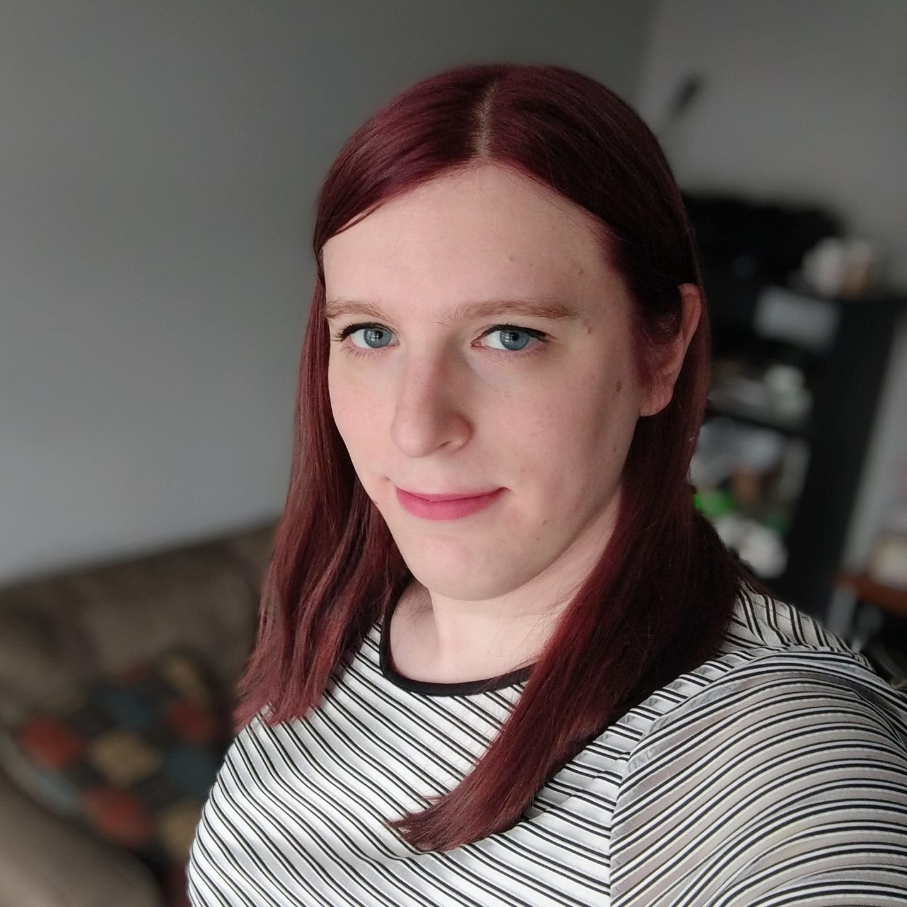

Zoe Helding
Software Engineer & Game Developer

Hello! My name is Zoe Helding. I am a software engineer living in Chicago with experience developing full stack web applications and cloud infrastructure. I have a background primarily in political tech -- as well as a degree in Philosophy, Politics, and Economics from the University of Oxford.
Recently, I have been teaching myself game design with the hopes of either producing an independent project or breaking into the games industry. To this end, I have been experimenting extensively in Unity and Godot - and also participating in game jams.
I tend to enjoy games with deep worldbuilding and characterization and/or complex systems. I have additional interests in conlanging, wargaming, musical performance, and economics - all of which inform both the games I play and create.
I can be contacted for any reason at zoe.helding [at] gmail.com. A current copy of my resume can be found here, and the icons below link to my relevant social media profiles.